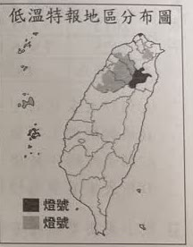
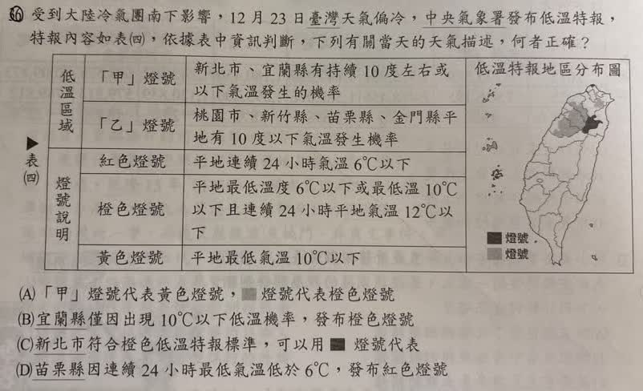

分享原卷｜第36題
完整原題
| 分類 | 項目 | 內容 |
|---|---|---|
| 低溫區域 | 「甲」燈號 | 新北市、宜蘭縣有持續10度左右或以下氣溫發生的機率 |
| 低溫區域 | 「乙」燈號 | 桃園市、新竹縣、苗栗縣、金門縣平地有10度以下氣溫發生機率 |
| 燈號說明 | 紅色燈號 | 平地連續24小時氣溫6°C以下 |
| 燈號說明 | 橙色燈號 | 平地最低溫度6°C以下或最低氣溫10°C以下且連續24小時平地氣溫12°C以下 |
| 燈號說明 | 黃色燈號 | 平地最低氣溫10°C以下 |

受到大陸冷氣團南下影響，12月23日臺灣天氣偏冷，中央氣象署發布低溫特報，特報內容如表（四），依據表中資訊判斷，下列有關當天的天氣描述，何者正確？
(A) 「甲」燈號代表黃色燈號，淺灰方塊燈號代表橙色燈號
(B) 宜蘭縣僅因出現10°C以下低溫機率，發布橙色燈號
(C) 新北市符合橙色低溫特報標準，可以用深灰方塊燈號代表
(D) 苗栗縣因連續24小時最低氣溫低於6°C，發布紅色燈號
先想一想，再查看答案、解說與原圖
原卷作答：B；紅筆訂正C
正確答案：C。新北市符合橙色低溫特報標準，對應圖中的深灰方塊圖例。
逐項解析
| 選項與原句 | 判讀 | 句意與判斷理由 |
|---|---|---|
| (A) 「甲」燈號代表黃色燈號，淺灰方塊燈號代表橙色燈號 | 不選 | 甲與深灰才對應橙色，淺灰為黃色。 |
| (B) 宜蘭縣僅因出現10°C以下低溫機率，發布橙色燈號 | 不選 | 漏掉持續低溫的條件，僅因一次低於10°C不足以概括。 |
| (C) 新北市符合橙色低溫特報標準，可以用深灰方塊燈號代表 | 應選 | 新北市位於深灰區，配合表中持續低溫資料，對應橙色。 |
| (D) 苗栗縣因連續24小時最低氣溫低於6°C，發布紅色燈號 | 不選 | 苗栗在乙燈號資料中，非表列紅色連續24小時6°C以下情境。 |
詳細說明與解題步驟
【分清氣溫門檻與持續時間】
依本題表格，黃色燈號是平地最低氣溫10°C以下。
橙色燈號有兩種情況：最低氣溫6°C以下；或最低氣溫10°C以下，且連續24小時氣溫12°C以下。
紅色燈號則須平地連續24小時氣溫6°C以下，不是只在某個時刻出現一次6°C以下。
【對照地區及灰階圖例】
題文列新北、宜蘭為甲燈號，強調持續低溫；地圖中這兩地以深灰圖例表示，對應橙色。桃園、新竹、苗栗及金門屬乙，為黃色燈號，對應淺灰。因此新北市可用深灰圖例代表，選C。
【其他選項】
A把甲判成黃色，又把淺灰圖例判成橙色，對應顛倒。
B只取出10°C以下，漏掉宜蘭有持續低溫的條件，不能用「僅因」概括。
D把苗栗說成連續24小時低於6°C的紅色，與表中乙燈號資料不同。
【來源AI用語訂正】
紅色標準是「連續24小時氣溫」低於門檻，不是只比較一天的最低氣溫。依題目所給的特報作答，不猜補12月23日的年份，也不把這張題圖當作今天的即時特報。
原灰階方塊以深灰、淺灰文字指稱，原圖圖例一併保留供對照。
核對註記：原題、完整表與分布圖已核對；選項原灰階圖例以深灰／淺灰方塊文字指稱，原圖保留，不改其對應關係。
原圖（僅本題）
